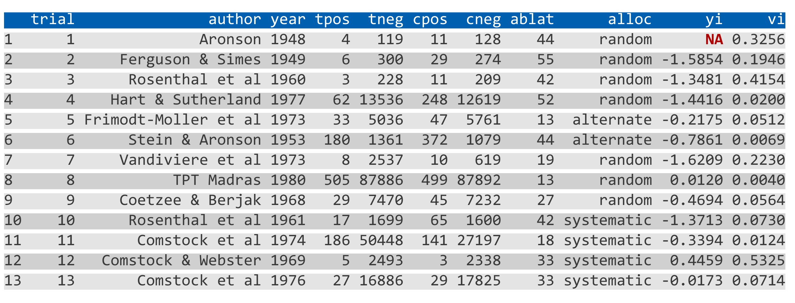
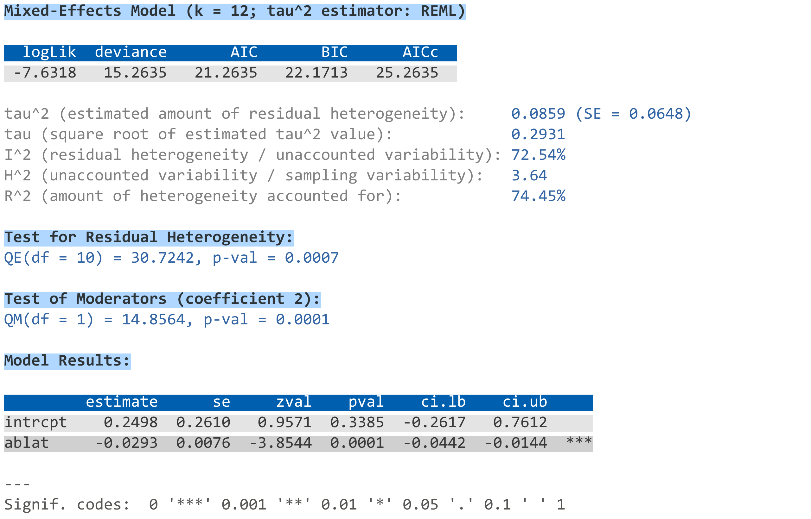

| misc-options {metafor} | R Documentation |
This page documents some miscellaneous options and features that do not fit very well elsewhere.
Many functions in the metafor package have a digits argument, which can be used to control the number of digits that are displayed in the output when printing numeric values. For more control over the displayed output, one can set this argument to a named vector of the form:
digits=c(est=2, se=3, test=2, pval=3, ci=2, var=3, sevar=3, fit=3, het=3)
where the elements control the displayed number of digits for various aspects of the output, namely:
est for estimates (e.g., effect sizes, model coefficients, predicted values),
se for standard errors,
test for test statistics,
pval for p-values,
ci for confidence/prediction interval bounds,
var for sampling variances and variance components,
sevar for standard errors thereof,
fit for fit statistics,
het for heterogeneity statistics.
Instead of setting this argument in each function call (which would be tedious), one can also create a vector named .digits in the workspace (at the beginning of an analysis script) with:
.digits <- c(est=2, se=3, test=2, pval=3, ci=2, var=3, sevar=3, fit=3, het=3)
which then controls the displayed output. The values for the elements shown above could be a sensible choice when analyzing various types of standardized effect size measures.
The crayon package provides a way to create colored output. The metafor package is designed to automatically make use of this feature when the crayon package is installed (install.packages("crayon")) and loaded (library(crayon)). Note that this only works on terminals that support ‘ANSI’ color and highlight codes (e.g., not under RGui on Windows or R.app on macOS, but the RStudio console and all modern terminals should support this).
The default color theme that is used is quite plain, but should work with a light or dark colored background. One can modify the color theme by creating an object in the workspace named .mtheme, which should be a list whose elements specify the styles for various parts of the output (see below for some examples and the documentation of the crayon package for the syntax to specify styles). The following elements are recognized:
header for the header of tables (underlined by default),
body1 for odd numbered rows in the body of tables,
body2 for even numbered rows in the body of tables,
na for missing values in tables,
section for section headers (bold by default),
text for descriptive text in the output,
result for the corresponding result(s),
stop for errors (bold red by default),
warning for warnings (yellow by default),
message for messages (green by default),
verbose for the text in verbose output (cyan by default),
legend for legends (gray by default).
Elements not specified are styled according to their defaults. For example, one could use:
.mstyle <- list(header=combine_styles("gray20", "underline"),
body1=make_style("gray40"),
body2=make_style("gray40"),
na=bold,
section=combine_styles("gray15", "bold"),
text=make_style("gray50"),
result=make_style("gray30"))
or
.mstyle <- list(header=combine_styles("gray80", "underline"),
body1=make_style("gray60"),
body2=make_style("gray60"),
na=bold,
section=combine_styles("gray85", "bold"),
text=make_style("gray50"),
result=make_style("gray70"))
for a light or dark colored background, respectively. A slightly more colorful theme could be:
.mstyle <- list(header=combine_styles("snow", make_style("royalblue4", bg=TRUE)),
body1=combine_styles("gray20", make_style("gray95", bg=TRUE)),
body2=combine_styles("gray20", make_style("gray85", bg=TRUE)),
na=combine_styles("red4", "bold"),
section=combine_styles("black", "bold", make_style("lightskyblue", bg=TRUE)),
text=make_style("gray50"),
result=make_style("blue"))
or
.mstyle <- list(header=combine_styles("snow", make_style("royalblue4", bg=TRUE)),
body1=combine_styles("gray95", make_style("gray20", bg=TRUE)),
body2=combine_styles("gray95", make_style("gray30", bg=TRUE)),
na=combine_styles("orange1", "bold"),
section=combine_styles("white", "bold", make_style("blue", bg=TRUE)),
text=make_style("steelblue4"),
result=make_style("steelblue1"))
for a light and dark colored background, respectively.
The following code snippet includes all output elements (except for an error) and can be used to test out a chosen color theme:
# calculate log risk ratios and corresponding sampling variances
dat <- escalc(measure="RR", ai=tpos, bi=tneg,
ci=cpos, di=cneg, data=dat.bcg)
dat$yi[1] <- NA # set one estimate to missing so we get a warning below
dat
# fit random-effects model
res <- rma(yi, vi, mods = ~ ablat, data=dat, verbose=3)
summary(res)
For example, using the color scheme above (for a light colored background), the output should look like this:
 
Note that support for 256 different colors and text formatting (such as underlined and bold text) differs across terminals.
When printing output, an empty line is usually added before and after the output. For more compact output, this can be suppressed by creating an object named .rmspace in the workspace. For example, running the following code:
# calculate log risk ratios and corresponding sampling variances
dat <- escalc(measure="RR", ai=tpos, bi=tneg,
ci=cpos, di=cneg, data=dat.bcg)
# fit random-effects model
res <- rma(yi, vi, data=dat)
res
.rmspace <- TRUE
res
shows the difference.
When loading the metafor package in an interactive session, an automatic check is run to compare the version number of the installed package with the one available on CRAN. If the installed version is older than the one available at CRAN, the user is notified that a new version is available. This check can be suppressed by setting the environment variable METAFOR_VERSION_CHECK to FALSE (e.g., with Sys.setenv(METAFOR_VERSION_CHECK=FALSE)).
By setting the environment variable to "devel" (e.g., with Sys.setenv(METAFOR_VERSION_CHECK="devel")), the version check is run against the ‘development version’ available on GitHub.
The various model fitting functions (i.e., rma.uni, rma.mh, rma.peto, rma.glmm, rma.mv, and selmodel) and various other functions (e.g., confint, cumul, leave1out, profile, rstudent) automatically keep track of the model fitting / processing time. This information is stored as element time (in seconds) in the object that is returned. One can also use argument time=TRUE to nicely print this information. For example:
# fit multilevel mixed-effects meta-regression model and print processing time
res <- rma.mv(yi, vi, mods = ~ condition,
random = list(~ 1 | article/experiment/sample/id, ~ 1 | pairing),
data=dat.mccurdy2020, sparse=TRUE, digits=3, time=TRUE)
# extract processing time (should take somewhere around 10-20 seconds on a modern CPU)
res$time
Several functions in the metafor package can make use of parallel processing (e.g., profile) to speed up intensive computations on machines with multiple cores. When using parallel="snow", the default is to use the parLapply function from the parallel package for this purpose. In some cases (especially when the parallelized computations take up quite variable amounts of time to complete), using ‘load balancing’ may help to speed things up further (by using the parLapplyLB function). This can be enabled with pbapply::pboptions(use_lb=TRUE) before running the function that makes use of parallel processing. Whether this really does speed things up depends on many factors and is hard to predict.
Wolfgang Viechtbauer wvb@metafor-project.org https://www.metafor-project.org
Viechtbauer, W. (2010). Conducting meta-analyses in R with the metafor package. Journal of Statistical Software, 36(3), 1–48. https://doi.org/10.18637/jss.v036.i03